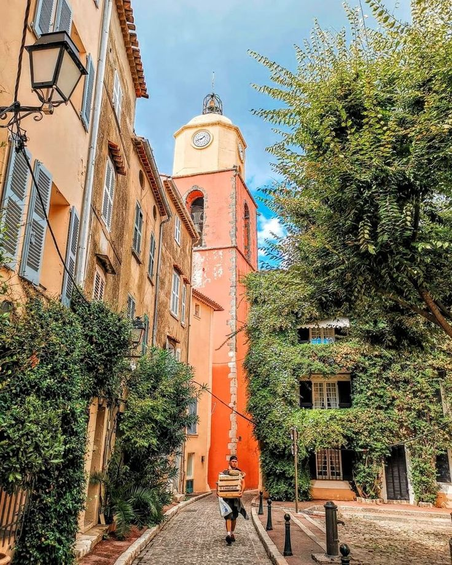

Saint Tropez, meta preferita di attori, registi, modelli e altre persone di successo, e' il simbolo della Costa Azzurra. Si affaccia su un piccolo golfo nella Francia sud-orientale e confina ad ovest con il territorio di Gassin e a sud con quello di Ramatuelle.
E' famosa per la sua vita mondana ma anche per l’atmosfera tranquilla regalata dal paesaggio portuale, dalla vegetazione e dalla presenza di graziose casette color pastello che si affacciano sul mare.